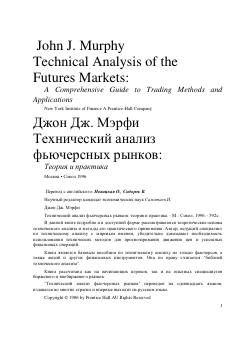

ТАTexnik tahlil bo'yicha dunyodagi eng nufuzli va fundamental qo'llanma.
Ushbu kitob texnik tahlilning nazariy asoslari va uni amaliyotda qo'llash usullarini batafsil yoritib beradi. Muallif moliyaviy bozorlarda narxlar harakatini bashorat qilish va muvaffaqiyatli savdo operatsiyalarini amalga oshirish uchun texnik metodlarning ahamiyatini asoslab beradi. Asar texnik tahlil bo'yicha dunyodagi eng nufuzli qo'llanmalardan biri hisoblanadi.